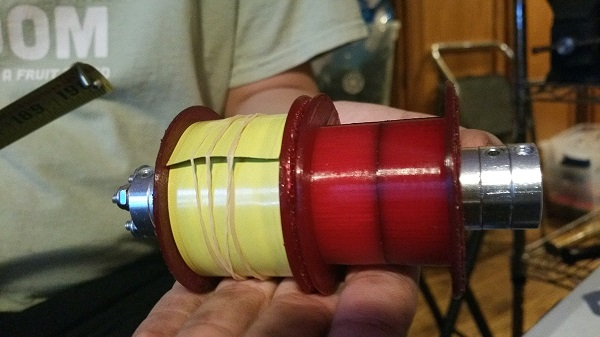

While our tape-measure design worked decently at our competition last week, with multiple mid zone scores and one high zone score, we are going to need more consistency to be a valuable ally in our matches. At competition we saw the tape fold multiple times, requiring a new retract/extend cycle that wasted time and often required reposositioning heroics from our driver. Mostly this was due to the hasty replacement of the dead servo that controlled the tape's elevation. The replacement didn't line up with the previous one and might have had a different programmed response range. As a result the preset angles were all wrong and it took us a few matches to reprogram usable elevation angles. In the mean-time drivers had to jockey the robot into weird positions that challenged the stability of the tape. So we'll fix the problem with better servo maintenance, but in the mean-time we thought that maybe we could also stabilize the tape by adding a buddy. Thus the double-wide (slit) experiment.
Now we have two custom printed tape spools on a shared axis. Max designed a new 3-D printed case to hold both. The case floats on the axis and rotating the case is what sets the elevation of the tapes. Since our design does not use the original spools of the tape measures with their counter-springs, our tapes naturally want to extend out of the case. This simplifies our design so that we don't have to push the tape out with a drive wheel, but it also increases the power needed to retract the tapes. Now with two tapes there is even more resistance to retracting the tape even when the robot is not lifting. So we switched from two regular Neverest motors to two 60:1 versions with increased torque. With two tapes, there is also less strain on each. Ripping tape was another competition experience that we want to minimize.
A consequence we didn't predict is how much weight the second tape adds. When testing the new design we discovered that this extra weight adds considerable force against the servo that controls elevation - particularly when the tape is extended out to the 3 feet or so that we need to disengage from the last churro prior to coming back down the mountain. We need a way to counter this extra weight and relieve the servo of the burden. Probably more elastic materials.
We also discovered that the servo linkage point on the custom case needs to be moved to give a better range of articulation based on where the servo is mounted. Max has already made the design improvements and we are printing a new case overnight. It takes our printer 11 hours to print both halves of this case design.
We are hoping that all this effort leads to a reliable 80-point hang for next week's competition. We are trying to make our control scheme as easy to interpret by our driver as possible, so we are implementing a mountain mode that should simplify things. Now, we need to focus on our conveyer belt system to score blocks as well as climb the ramp.